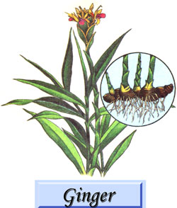
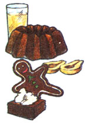

Lately, more and more people have begun to understand just how limited-in both variety and nutritional value-our "modern" diets have become. This realization has sparked a new and widespread interest in the culinary and therapeutic uses of herbs . . . those plants which-although not well known today-were, just one short generation ago, honored "guests' on the dinner tables and in the medicine chests of our grandparents' homes. In this regular feature, MOTHER will examine the availability, cultivation, and benefits of our "forgotten" vege table foods and rem edies . . . and-we hope-help pre vent the loss of still another bit of an cestral lore.
Ginger can be any of various perennial plants of the Zingiberaceae family (which includes cardamom and turmeric, among others), but Zingiber officinale is the "proper" or commercial product most familiar to us. Unfortunately for gardeners In the temperate zones, ginger grows only in hot, wet, tropical areas of the world . . . such as parts of India, China, Nigeria, Queensland (Australia), and Jamaica. North America hosts unrelated plants, known as wild ginger (Asarum canadense and other species), with a similar-though milder-odor and taste, which can be used for medicinal and culinary purposes.
Reedlike and somewhat exotic-looking, with its leaf-sheathed stem and spikes of yellow flowers, ginger grows three to five feet tall and has 6 to 12-inch pointed leaves. The thick rootor rhizome-is whitish or buffcolored, aromatic, and knotty.
According to some authorities, ginger was brought from Asia to the Mediterranean by Roman soldiers around the first century A.D., and all agree that the spice had become quite popular in England by the eleventh century. The Spaniards introduced it to the West Indies shortly after the discoveries of Columbus, and the spice was carried to continental North America by the Pilgrims.
From the sixteenth to the eighteenth centuries, ginger was a common-and sometimes overwhelming!-ingredient in everyday meals. The spice was used in such quantities that people must have sometimes found it difficult to identify the underlying substance of a dish. One entree, for instance, specified that two kinds of ginger be chopped up with the meat, which was then cooked in a batter of . . . more ginger.
Thanks in part to the introduction of sugar as a common food additive and to the marketing philosophy of the industrial revolution (more sales and a smaller selection), the enormous variety of seasonings typical of medieval and Renaissance cuisine dwindled to a bare handful . . . but ginger survived, and is still popular today.
As a flavoring, the spice can be used fresh, dried (ground or cracked), candied, or preserved in syrup. It's a key ingredient in many Chinese dishes, as well as in the famous curries and condiments of southeast Asia.
Traditional health care uses abound, as well: Ginger tea stimulates the appetite before dinner, and is said to relieve gas afterward . . . a ginger plaster is reputed to cure a dull headache . . . and chewing a piece of fresh ginger root is supposed to relieve a toothache.
There are many fine recipes based upon this delightful spice (see page 8 for a selection). The following, called "Crown of Gingerbread" (adaptedwith permission-from The Bread Tray by Louis de Gouy) proved especially popular with MOTHER's staff: Stir 3/4 cup of brown sugar into 3/4 cup of dark molasses. [EDITOR'S NOTE: If substituting honey, use whatever conversion formula works for you, but do try to find a dark honey. Remember, too, that the flavor will be affected by the substitution.] Add 2 well-beaten eggs, and mix the ingredients briskly for one minute. Stir in 3/4 cup of melted lard or vegetable shortening, and blend well.
Next, sift together 2-1/2 cups of bread flour, 2 teaspoons of baking powder, 2 teaspoons of ground ginger, 1-1/2 teaspoons of cinnamon, 1/2 teaspoon of cloves, 1/2 teaspoon of nutmeg, a generous 1/2 teaspoon of baking soda, and 1/2 teaspoon of salt. Sift the dry mix again, this time over the combined liquid ingredients . . . alternately adding a total of 1 cup of boiling water. Beat to form a smooth batter, then pour it into a greased ring mold or tube pan and bake the dessert for 35 to 40 minutes at 350°F, until it's firm. If desired, fill the center hole with cut-up fruit, whipped cream, or pudding . . and watch your crew wolf it down!
|
 |
 |
|